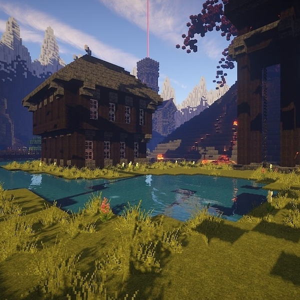

The Most Popular Video Games
A Snapshot of Modern Gaming
Here’s a look at some of the most popular video games as of 2024, based on player count, community engagement, and cultural impact.

1. Fortnite
Since its release in 2017, Fortnite has consistently remained at the top of gaming charts. Developed by Epic Games, this battle royale shooter has become a global sensation with its unique combination of building mechanics and third-person shooting.
2. Call of Duty: Warzone
Cll of Duty is one of the most enduring franchises in gaming, and Warzone (2020) has taken its legacy to new heights. This free-to-play battle royale game from Activision offers fast-paced, high-stakes action with impressive graphics and deep customization.
3. Minecraft
Released in 2011, Minecraft remains one of the most played and beloved games in the world. Its simple yet deep gameplay — focused on exploration, creativity, and survival — appeals to players of all ages. The sandbox game allows players to create vast worlds.
4. League of Legends
League of Legends (LoL) has been a major player in the competitive gaming scene since its launch in 2009. Developed by Riot Games, this multiplayer online battle arena (MOBA) remains at the pinnacle of esports, with millions of players battling it out in five-on-five matches.
5. Valorant
Another hit from Riot Games, Valorant has quickly become a staple in the tactical shooter genre since its release in 2020. Combining precise gunplay with unique character abilities, Valorant draws comparisons to games like Counter-Strike: Global Offensive and Overwatch.
6. Genshin Impact
Genshin Impact (2020) by miHoYo is a free-to-play action RPG that took the world by storm with its stunning open-world design, engaging combat, and anime-inspired art style. Its frequent updates, new regions, and engaging storylines keep players coming back for more.
7. Apex Legends
Apex Legends, developed by Respawn Entertainment, is a battle royale that blends the hero-based mechanics of Overwatch with the fast-paced action of traditional shooters.
8. Roblox
Roblox is less a game and more a platform for user-generated content. Launched in 2006, it saw a surge in popularity during the 2020s, especially among younger audiences. Players can create and share their games, ranging from simple obstacle courses to complex multiplayer experiences.
9. Elden Ring
Released in 2022 by FromSoftware, Elden Ring quickly became a cultural landmark in the gaming world. This action RPG, co-developed by Game of Thrones author George R.R. Martin, takes players on a journey through a vast open world filled with dangerous enemies, challenging combat, and intricate lore.
10. The Legend of Zelda: Tears of the Kingdom
The much-anticipated sequel to Breath of the Wild (2017), Tears of the Kingdom (2023) continues the story of Link in a stunning open-world setting.
Conclusion
The current gaming landscape is vast and diverse, offering something for everyone, whether you prefer the competitive thrills of a shooter or the creative freedom of a sandbox game. These titles not only dominate player numbers but also influence culture, technology, and the future of interactive entertainment. As gaming continues to evolve, these games stand as pillars of innovation, community, and storytelling in the digital world.